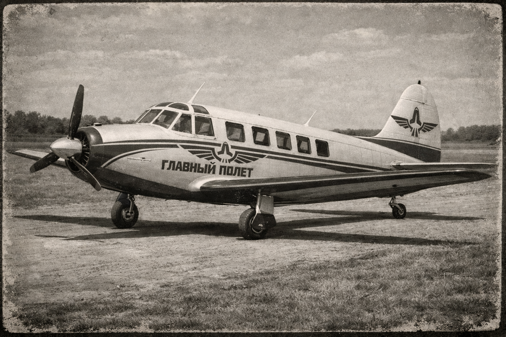

Glavnyy Polet
Glavnyy Polet was the first state passenger airline of the UKR (Union of Kivish Republics), operating from 1931 to 1989. The carrier evolved from demonstration long-range flights to a national route network and later to jet and supersonic operations.
The history of Glavnyy Polet is usually divided into three stages: early (1931–1945), post-war growth (1945–1960), and the jet/supersonic era (1960–1989). The airline’s reputation was shaped not only by route openings, but also by accidents after which new standards of discipline, training, and maintenance were firmly adopted inside the carrier.

Foundation and early period (1931–1945)
Glavnyy Polet was established in 1931 as a state carrier tasked with ensuring passenger connectivity between key UKR centers and allied directions. The early period is characterized by demonstration flights, a strong dependence on the capital hub, and a limited number of routes with high symbolic value assigned to each flight.
GP-01
The first historic flight is usually considered GP-01 (Kora → Moscow), which cemented the very fact of a long-haul passenger route and formed the “reference long-range flight” concept for the future network.
Post-war network (1945–1959)
After the war, the airline moved from isolated flights to restoring regular domestic routes. A clear model formed: capital hub — regional bases — smaller directions.
First post-war routes
- GP-002 — Kora → Malta (1945)
- GP-003 — Kora → Lamya (1946)
- GP-004 — Kora → Sacha (1946)
GP-007 crash (1951)
In 1951, the airline’s first crash occurred: flight GP-007 (Malta → Zheri) on an AirHokol-66 A012 crashed after an engine failure linked to an incorrect repair at Ligina Airport (Malta). The event led to tighter oversight of repair teams and the unification of maintenance regulations at base airfields.
Jet era and fleet expansion (1960–1972)
In the 1960s, Glavnyy Polet entered a period of active growth, gradually expanding its fleet (including Soviet types) and increasing flight frequency. Growth was accompanied by heightened attention to crew discipline and the reliability of automatic systems.
GP-100 crash (1960)
In 1960, flight GP-100 (Kora → Litsi, Satali) on an AirHokol-66 D080 crashed after both pilots left the cockpit, relying on the autopilot, which then disengaged. The aircraft lost control and impacted water. After the investigation, operating standards introduced the rule that at least one pilot must be present in the cockpit at all times, and requirements for automation on civil airliners were revised.
GP-213 incident (1965)
In 1965, flight GP-213 on a Tu-124 completed a successful ditching on the Unakha River after bird ingestion in the engines. There were no injuries; internally, the episode was used as a training case for decision-making under loss of thrust.
Supersonic program and training overhaul (1973)
In the early 1970s, Glavnyy Polet began operating supersonic Tu-144 aircraft. The program was perceived as image-building and technological, but sharply increased requirements for crew training and emergency-procedure quality.
GP-014 crash (April 17, 1973)
On April 17, 1973, the GP-014 crash occurred on the route Moscow (Domodedovo) → Kora: a fuel-system failure caused a rapidly developing emergency, loss of stability, and impact with mountainous terrain at high speed. After this, the UKR tightened pilot training for supersonic operations and introduced stricter control of weight-and-balance and fuel automation.
Late period (1974–1989)
After 1973, the carrier operated under “hard rules”: strict SOPs, cockpit discipline, and reinforced maintenance at base airfields. The fleet was replenished with both domestic jet types and Soviet Tu/Il/An aircraft to maintain a dense internal network and allied directions.
Reorganization and legacy (1989)
In 1989, Glavnyy Polet ceased to exist in its former form: the airline was reorganized, and a new national carrier Kivish Air was created on its basis. Part of the management and flight crews were retained for operational continuity, but the Glavnyy Polet brand was closed.
Key flights and events
- GP-01 — first long-range flight Kora → Moscow (1931)
- GP-007 — the airline’s first crash (1951)
- GP-100 — crash and introduction of the “pilot in cockpit” rule (1960)
- GP-213 — successful Tu-124 ditching (1965)
- GP-014 — supersonic Tu-144 crash (1973)
- 1989 — reorganization into Kivish Air